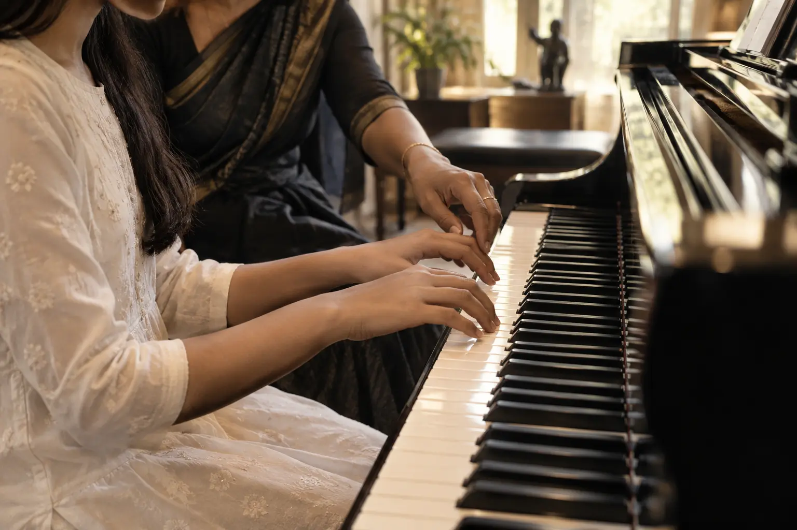
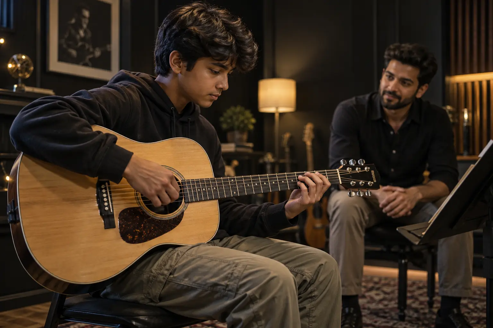

Musical institute · Gurugram
Where discipline becomes expression.
Thoughtful musical training for curious beginners, committed learners and every artist still becoming.
Explore↓Music is not simply learned.
It is listened to, shaped, and finally made your own.
At Opus & Ivory, every lesson begins with attention—to the student, to the instrument, and to the small details that turn practice into artistry.
Find your instrument.
Explore focused one-to-one and small-format learning. Ask the institute about current batches and availability.

The finest progress is rarely loud. It is built note by note.
Patient guidance. Purposeful practice. A space where students feel heard.
A room for becoming.
Technique meets curiosity in an atmosphere designed for attention.

Every learner arrives with a different rhythm. The teaching should meet them there.
Arrange a visit ↗Your first note can begin right here.
Tap the ivory keys. Each one carries a piece of the Opus & Ivory motif.
Come hear the difference.
Meet the faculty, see the learning space and discuss the right starting point for your musical journey.
Plan your visit ↗